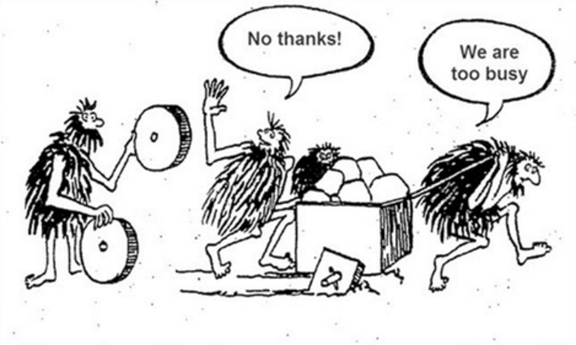

发明轮子
朱利安·多明格斯2017年4月12日下午2:49:11
微软Orleans项目开始于许多年前的微软研究，当时连任务类都不存在。随着项目的成熟，需要许多非核心抽象和功能来支持其增长。这些抽象在.NET中并不作为标准存在，.NETOSS还处于初级阶段。这些方面的例子包括横切关注点，如日志记录、配置和依赖注入。
随着时间的推移，出现了一些常见的抽象和模式，并且达到了只采用它们就有意义的程度。原因有很多：
- 开发人员已经习惯了标准的模式和抽象，所以新手不需要为了使用Orleans而学习这些非核心抽象。
- 标准抽象的采用程度非常高，几乎每一个第三方组件都与该抽象相关。另一方面，今天它要求Orleans社区为许多第三方组件构建集成包(即：使用Serilog、log4net或push events to ETW)，因为这些组件的所有者只会为公共抽象创建集成包，而不是为Orleans或任何其他非标准抽象创建集成包。
- 我们创建了定制的抽象来完成这项工作，但是在这之后我们并没有过多地关注可用性，因为它只是进入了维护模式。有时我们发现这些抽象不够好，所以我们必须做出突破性的改变(例如，我们向非静态客户端和silos的迁移需要非静态日志抽象)。
- 这些标准的抽象是经过深思熟虑来完成特定工作的，通常非常灵活，使用简单，并且有很多文档。我们只是站在他们的肩膀上。
- 删除对Orleans核心功能不重要的代码总是很好的。

我们已经开始使用Microsoft.Extensions.DependencyInjection支持DI的抽象，在很多地方我们不再使用穷人的对象激活(和两步初始化)方法。
随着我们的进一步发展，我们计划对一些定制抽象进行抨击，转而使用标准抽象。特别是我们已经在考虑两个即将到来的变化：
- 将日志抽象迁移到Microsoft.Extensions.Logging.
- 修改我们的配置和启动模式，使之与ASP.NET核心的。看dotnet/Orleans#2936对于这个动作的初步设计。
和往常一样，我们会尽量将破坏性更改保持在最低限度，但我们不会严格防止破坏更改。有时，我们使我们的新版本与源代码兼容(这意味着开发人员不能简单地在Orleans程序集上使用绑定重定向，但是重新构建他们的代码可能仍然可以编译)，或者需要一些最小的修复。有时，突破性的改变*更大的*如果它们只会影响到一个小特性或一些通常不会在用户的整个代码库中扩展的东西(例如不影响Grain代码的扩展点)。
而且，现在似乎是一个以全新的思维看待这些抽象的恰当时机，因为这正是.NET社区在展望以下事情时所做的ASP.NET和.NET核心。